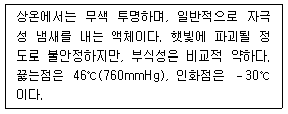
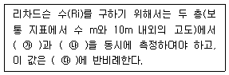
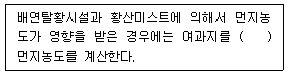
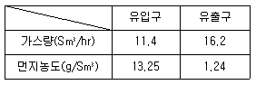

대기환경산업기사 (2016-10-01 기출문제)
1과목: 대기오염개론
1. 휘발유를 사용하는 가솔린기관에서 배출되는 오염물질의 설명 중 잘못된 것은? (단, 휘발유의 대표적인 화학식은 octane으로 가정, AFR은 중량비 기준)
- AFR을 10에서 14로 증가시키면 CO 농도는 감소한다.
- AFR이 16까지는 HC 농도가 증가하나, 16이 지나면 HC 농도는 감소한다.
- CO와 HC는 불완전연소 시에 배출비율이 높고, NOx는 이론 AFR 부근에서 농도가 높다.
- AFR이 18 이상 정도의 높은 영역은 일반 연소기관에 적용하기는 곤란하다.
(정답률: 85%)

2. 대기오염물의 확산모델 중 상자모델(box model)의 기본적인 가정에 관한 설명으로 가장 거리가 먼 것은?
- 오염물의 분해는 2차 반응에 의한다.
- 오염원은 방출과 동시에 균등하게 혼합된다.
- 고려되는 공간에서 오염물의 농도는 균일하다.
- 고려되는 공간의 수직단면에 직각방향으로 부는 바람의 속도가 일정하여 환기량이 일정하다.
(정답률: 75%)
3. 다음 대기오염물질을 분류했을 때, 1차 오염물질로만 옳게 짝지어진 것은?
- N2O3, O3
- H2S, H2O2
- HCl, CH3COOONO2
- SiO2, CO
(정답률: 82%)
4. 코리올리 힘에 관한 설명으로 틀린 것은?
- 지구의 자전운동에 의하여 생긴다.
- 운동의 방향만 변화시키고 속도에는 영향을 미치지 않는다.
- 지구의 극지방에서 최소가 된다.
- 힘의 방향은 경도력과 반대이다.
(정답률: 86%)
5. 다음 중 1, 2차 대기오염물질 모두에 해당하는 것은?
- O3
- PAN
- CO
- Aldehydes
(정답률: 80%)
6. 황화합물에 관한 설명으로 옳지 않은 것은?
- 황화합물은 산화상태가 클수록 증기압이 커지고 용해성은 감소한다.
- 해양을 통해 자연적 발생원 중 아주 많은 양의 황화합물이 DMS[(CH3)2S] 형태로 배출된다.
- 대기 중 유입된 SO2는 입자상 물질의 표면이나 물방울에 흡착된 후 비균질반응에 의해 대부분 황산염(SO42-)으로 산화되어 제거된다.
- 카르보닐황(OCS)은 대류권에서 매우 안정하기 때문에 거의 화학적인 반응을 하지 않는다.
(정답률: 73%)
7. 다음에서 설명하는 대기오염물질로 가장 적합한 것은?

- CS2
- COCl2
- Br2
- HCN
(정답률: 78%)
8. 광화학반응에 의해 생성되는 오존(O3)에 관한 일반적인 설명 중 옳은 것은?
- 오전 7~8시경에 하루 중 최고 농도를 나타낸다.
- 대기 중에 NO가 공존하면 O3은 NO2와 O2로 되돌아가므로 O3은 축적되지 않고 대기 중 O3은 증가하지 않는다.
- 상대습도가 높고, 풍속이 큰 지역(10m/s 이상)이 광화학반응에 의한 고농도 O3 생성에 유리하다.
- 지표대기 중 O3의 배경농도는 0.1~0.2ppm정도이다.
(정답률: 69%)
9. 비스코스 섬유 제조 시 주로 발생하는 무색의 유독한 휘발성 액체이며, 그 불순물은 불쾌한 냄새를 나타내는 대기오염물질은?
- 폼알데하이드(HCHO)
- 이황화탄소(CS2)
- 암모니아(NH3)
- 일산화탄소(CO)
(정답률: 77%)
10. 바람에 관한 설명으로 옳지 않은 것은?
- 해륙풍 중 육풍은 육지에서 바다로 향해 5~6km까지 바람이 불며 겨울철에 빈발한다.
- 산곡풍 중 산풍은 밤에 경사면이 빨리 냉각되어 경사면 위의 공기 온도가 같은 고도의 경사면에서 떨어져 있는 공기의 온도보다 차가워져 경사면 위의 공기 전체가 아래로 침강하게 되어 부는 바람이다.
- 전원풍은 열섬효과 때문에 도시의 중심부에서 하강기류가 발생하여 부는 바람이다.
- 휀풍은 산맥의 정상을 기준으로 풍상쪽 경사면을 따라 공기가 상승하면서 건조단열 변화를 하기 때문에 평지에서보다 기온이 약 1℃/100m의 율로 하강하게 된다.
(정답률: 76%)
11. A지역에서 빗물의 pH를 측정한 결과 5.1이었다. 빗물의 산성우 판정기준이 pH 5.6이라고 할 때 A지역에서 측정한 빗물의 수소이온농도의 비는 산성우 판정기준의 경우에 비해 어떻게 되겠는가?
- 약 2.3배 높다.
- 약 2.3배 낮다.
- 약 3.2배 높다.
- 약 3.2배 낮다.
(정답률: 79%)
12. 복사역전에 관한 설명으로 틀린 것은?
- 구름과 바람이 없는 경우에 주로 발생함
- 지역적으로 상층 공기층이 단열적으로 하강하여 발생함
- 대기오염물이 강우에 의하여 감소될 가능성이 적음
- 대기오염물이 바람에 의하여 분산될 가능성이 적음
(정답률: 69%)
13. 다음은 대기의 동적 안정도를 나타내는 리차드슨 수에 관한 설명이다. ( ) 안에 가장 적합한 것은?

- ㉮ 기압, ㉯ 기온, ㉰ 기온차의 제곱
- ㉮ 기온, ㉯ 풍속, ㉰ 풍속차의 제곱
- ㉮ 기압, ㉯ 기온, ㉰ 풍속차의 제곱
- ㉮ 기온, ㉯ 풍속, ㉰ 기온차의 제곱
(정답률: 77%)
14. 굴뚝높이가 50m, 배기가스의 평균온도가 120℃일 때, 통풍력은 15.41mmH2O이다. 배기가스 온도를 200℃로 증가시키면 통풍력(mmH2O)은 얼마가 되는가? (단, 외기온도는 20℃이며, 대기 비중량과 가스의 비중량은 표준상태에서 1.3kg/Sm3이다.)
- 약 8mmH2O
- 약 18mm22O
- 약 23mmH2O
- 약 29mmH2O
(정답률: 54%)
15. 다음 대기오염물질 중 대기 내의 평균 체류시간이 1~4일 정도로 짧고, 지구규모보다는 산성비와 같은 국지적인 환경오염에의 기여가 큰 것은?
- SO2
- O3
- CO2
- N2O
(정답률: 81%)
16. 다음 중 2차 오염물질로 볼 수 없는 것은?
- 이산화황이 대기중에서 산화하여 생성된 삼산화황
- 이산화질소의 광화학반응에 의하여 생성된 일산화질소
- 질소산화물의 광화학반응에 의한 원자상 산소와 대기중의 산소와 결합하여 생성된 오존
- 석유정제 시 수소첨가에 의하여 생성된 황화수소
(정답률: 86%)
17. 광화학적 스모그(smog)의 3대 생성요소가 아닌 것은?
- 질소산화물(NOx)
- 올레핀(olefin)계 탄화수소
- 아황산가스(SO2)
- 자외선
(정답률: 86%)
18. 유효굴뚝높이 60m에서 980,000m3/day의 유량과 SO2 1,200ppm으로 배출되고 있다. 이때 최대지표농도(ppb)는? (단, Sutton의 확산식을 사용하고, 풍속은 6m/s, 이 조건에서 확산계수 Ky=0.15, Kz=0.18이다.)
- 485
- 361
- 177
- 96
(정답률: 61%)
19. 악취(냄새)의 물리적, 화학적 특성에 관한 설명으로 옳지 않은 것은?
- 예외는 있으나 일반적으로 증기압이 높을수록 냄새는 더 강하다.
- 악취유발물질들은 paraffin과 CS2를 제외하고는 일반적으로 적외선을 강하게 흡수한다.
- 악취유발가스는 통상 활성탄과 같은 표면흡착제에 잘 흡수된다.
- 악취는 물리적 차이보다는 화학적 구성에 의해서 결정된다는 주장이 더 지배적이다.
(정답률: 85%)
20. 다음 역사적인 대기오염사건 중 methyl isocyanate가 주된 오염원인 것은?
- Donora 사건
- Meuse valley 사건
- Bhopal시 사건
- Poza Rica 사건
(정답률: 92%)
2과목: 대기오염 공정시험 기준(방법)
21. 연료용 유류 중의 황함유량을 측정하기 위한 분석방법에 해당하는 것은?
- 전기화학식 분석법
- 광산란법
- 연소관식 공기법
- 광투과율법
(정답률: 70%)
22. 황분 1.6% 이하를 함유한 액체 연료를 사용하는 연소시설에서 배출되는 황산화물(표준산소농도를 적용받는 항목)을 측정한 결과 710ppm이었다. 배출가스 중 산소농도는 7%, 표준산소농도는 4%이다. 시험성적서에 명시해야 할 황산화물의 농도는?
- 584ppm
- 635ppm
- 862ppm
- 926ppm
(정답률: 64%)
23. 환경대기 시료채취기준으로 옳지 않은 것은?
- 시료채취 위치는 주위에 건물이나 수목 등이 없는 곳을 원칙적으로 한다.
- 장애물이 있을 경우에는 채취위치로부터 장애물까지의 거리가 그 장애물 높이의 2배 이상 되는 곳을 선정한다.
- 주위에 건물 등이 밀집되어 있을 때는 건물 바깥벽으로부터 적어도 1m 이상 떨어진 곳을 채취점으로 선정한다.
- 시료채취의 높이는 그 부근의 평균오염도를 나타낼 수 있는 곳으로서 가능한 한 1.5~10m 범위로 한다.
(정답률: 71%)
24. 굴뚝 배출가스 중의 불소화합물 측정방법에 관한 설명으로 옳지 않은 것은?
- 적용 가능한 시험방법으로 자외선/가시선 분광법, 적정법, 이온선택전극법이 있다.
- 자외선/가시선 분광법을 사용할 때 정량범위는 HF로서 0.⑤~1,200ppm 이다.
- 자외선/가시선 분광법을 사용할 때 시료가스 중에 알루미늄(Ⅲ), 철(Ⅱ), 구리(Ⅱ), 아연(Ⅱ) 등의 중금속 이온이나 인산 이온이 존재하면 방해효과를 나타낸다.
- 자외선/가시선 분광법은 흡수파장 450mm 에서 측정한다.
(정답률: 72%)
25. 배출가스 중 납화합물을 자외선/가시선 분광법으로 분석할 때 사용되는 시약 및 용액에 해당하지 않는 것은?
- 디티존
- 클로로폼
- 시안화포타슘 용액
- 아세틸아세톤
(정답률: 71%)
26. 고용량 공기시료채취법으로 비산먼지 측정 시 시료채취 장소 및 위치 선정으로 가장 적합한 것은?
- 별도로 발생원의 아래인 바람의 방향을 따라 대상 발생원의 영향이 없을 것으로 추측되는 곳에 대조위치를 3개소 이상 선정한다.
- 발생원의 비산먼지 농도가 가장 낮을 것으로 예상되는 지점 2개소 이상을 선정한다.
- 시료채취장소는 원칙적으로 측정하려고 하는 발생원의 부지경계선상에 선정한다.
- 풍향은 고려하지 않아도 된다.
(정답률: 64%)
27. 원형 굴뚝 단면의 반경이 2.2m인 경우 측정점 수는?
- 8
- 12
- 16
- 20
(정답률: 83%)
28. 시료의 흡수액을 일정량으로 묽게 한 다음 완충액을 가하여 pH를 조절하고 란탄과 알리자린 컴플렉션을 가하여 흡광도를 측정, 분석하는 화합물의 종류는?
- 황화수소
- 불소화합물
- 납
- 폼알데하이드
(정답률: 68%)
29. 굴뚝 배출가스 중 일산화탄소 분석을 위한 정전위 전해법에 관한 설명으로 옳지 않은 것은?
- 90% 응답시간은 5분 이내로 한다.
- 정전위 전해법을 이용한 계측기는 소형 경량으로서 이동 측정에 적합하다.
- 프로페인 100ppm의 간섭영향 시험용 가스를 도입하였을 때 그 영향이 1ppm이하이어야 한다.
- 시료가스 유량 변화에 따른 안정성은 최대 눈금값의 ±2% 이내로 한다.
(정답률: 74%)
30. 대기오염공정시험기준에 사용되는 용어 중 ‘물질을 취급 또는 보관하는 동안에 기체 또는 미생물이 침입하지 않도록 내용물을 보호하는 용기’를 의미하는 것은?
- 밀폐용기
- 기밀용기
- 밀봉용기
- 차광용기
(정답률: 82%)
31. 다음은 굴뚝 배출가스 내의 먼지측정방법 중 반자동식 채취기에 의한 사항이다. ( ) 안에 가장 적합한 것은?

- 110±5℃에서 2시간 이상 건조시킨 후
- 160℃ 이상에서 2시간 이상 건조시킨 후
- 110±5℃에서 4시간 이상 건조시킨 후
- 160℃ 이상에서 4시간 이상 건조시킨 후
(정답률: 71%)
32. 굴뚝, 덕트 등을 통하여 대기 중으로 배출되는 가스상 물질을 분석하기 위한 시료채취방법에 관한 설명으로 옳지 않은 것은?
- 채취관은 흡인가스의 유량, 채취관의 기계적 강도, 청소의 용이성 등을 고려하여 안지름 6~25mm 정도의 것을 쓴다.
- 연결관은 가능한 한 수직으로 연결해야 하고, 부득이 구부러진 관을 쓸 경우에는 응축수가 흘러나오기 쉽도록 경사지게(5° 이상) 한다.
- 연결관의 안지름은 연결관의 길이, 흡입가스의 유량, 응축수에 의한 막힘, 또는 흡인펌프의 능력 등을 고려하여 4~25mm로 한다.
- 채취부의 수은마노미터는 대기와 압력차가 150mmHg 이하인 것을 쓴다.
(정답률: 75%)
33. 철강공장의 아크로와 연결된 개방형 여과집진시설에서 배출되는 먼지농도 측정방법에 관한 설명으로 가장 거리가 먼 것은?
- 건옥백하우스의 경우는 장입 및 출강 시는 20±5L/min, 용해정련기는 10±3L/min로 배출가스를 흡인한다.
- 직인백하우스의 경우는 장입 및 출강 시는 10±3L/min 용해정련기는 20±5L/min로 배출가스를 흡인한다.
- 먼지 측정은 규정에 따라 등속흡인해야 하며, 시료채취 시 측정공은 반드시 헝겊 등으로 밀폐하여야 한다.
- 한 개의 원통형 여과지에 포집된 1회 먼지포집량은 2mg 이상 20mg 이하로 함을 원칙으로 한다.
(정답률: 62%)
34. 다음 중 4－메틸－2－펜타논, EDTA 용액 및 몰린 용액을 가하여 정량하는 오염물질은?
- 납화합물
- 니켈화합물
- 베릴륨화합물
- 카드뮴화합물
(정답률: 65%)
35. 가스 크로마토그래피에서 A, B 성분의 보유시간이 각각 2분, 3분이었으며, 피크 폭은 32초, 38초이었다면, 이때 분리도는?
- 1.2
- 1.5
- 1.7
- 1.9
(정답률: 69%)
36. 굴뚝 배출가스 중 가스상 물질 시료채취방법에서 연결관에 관한 설명으로 옳지 않은 것은?
- 연결관은 가능한 한 수직으로 연결해야 한다.
- 가열 연결관은 시료 연결관, 퍼지라인(purge line), 교정가스관, 열원(선), 열전대 등으로 구성되어야 한다.
- 하나의 연결관으로 여러 개의 측정기를 사용할 경우 각 측정기 앞에서 연결관을 병렬로 연결하여 사용한다.
- 연결관의 길이는 되도록 짧게 하고, 부득이 길게 해서 쓰는 경우에는 이음매가 없는 배관을 써서 접속부분을 적게 하고 받침 없이 쉽게 이동하도록 사용해야 하며, 15m를 넘지 않도록 한다.
(정답률: 74%)
37. 환경대기 중 가스상 물질의 시료채취방법에 해당하지 않는 것은?
- 용매채취법
- 용기채취법
- 고체흡착법
- 고온흡수법
(정답률: 72%)
38. 환경대기 중의 옥시단트 측정방법에서 사용되는 용어의 설명으로 옳은 것은?
- 옥시던트 농도는 산소 농도를 기준으로 나타내며, 산성 요오드화칼륨법을 주시험방법으로 한다.
- 옥시던트란 전옥시단트, 광화학옥시던트, 오존 등의 산화성 물질의 총칭이다.
- 전옥시던트란 광화학옥시던트에서 이산화질소를 제외한 물질의 총칭이다.
- 광화학옥시던트란 중성 요오드화칼륨용액에 의해 요오드를 유리시키는 물질을 말한다.
(정답률: 65%)
39. 다음 중 분석대상 가스가 폼알데하이드일 경우 분석방법으로 가장 적합한 것은?
- 침전적정법
- 질산은법
- 가스 크로마토그래피법
- 크로모트로핀산법
(정답률: 75%)
40. 굴뚝 배출가스 분석대상 성분과 그 분석방법 및 흡수액의 관계로 옳지 않은 것은?
- 질소산화물－살츠만법－무수설파닌산나트륨 용액
- 브롬화합물－흡수분광법－수산화소듐 용액
- 페놀－흡수분광법－수산화소듐 용액
- 황화수소－흡수분광법－아연아민착염 용액
(정답률: 65%)
3과목: 대기오염방지기술
41. 다음 중 흡수장치에 관한 설명으로 옳지 않은 것은?
- 충전탑은 포말성 흡수액에도 적응성이 좋으나 충전층의 공극이 폐쇄되기 쉬우며, 희석열이 심한 곳에는 부적합하다.
- 분무탑은 가스의 흐름이 균일하지 못하고 분무액과 가스의 접촉이 균일하지 못하여 효율이 낮은 편이다.
- 벤투리 스크러버는 압력손실이 높으며, 소형으로 대용량의 가스처리가 가능하고, mist의 발생이 적고, 흡수효율도 낮은 편이다.
- 제트 스크러버는 가스의 저항이 적고, 수량이 많아 동력비가 많이 소요되며, 처리가스량이 많을 때에는 효과가 낮은 편이다.
(정답률: 66%)
42. 연료 중 탄수소비(C/H비)에 관한 설명으로 옳지 않은 것은?
- 액체 연료의 경우 중유＞경유＞등유＞휘발유 순이다.
- C/H비가 작을수록 비점이 높은 연료는 매연이 발생되기 쉽다.
- C/H비는 공기량, 발열량 등에 큰 영향을 미친다.
- C/H비가 클수록 휘도는 높다.
(정답률: 67%)
43. 두 종류의 집진장치를 직렬로 연결하였다. 1차 집진장치의 입구 먼지농도는 13g/m3, 2차 집진장치의 출구 먼지농도는 0.4g/m3이다. 2차 집진장치의 처리효율을 90%라 할 때, 1차 집진장치의 집진효율은? (단, 기타 조건은 같다.)
- 약 56%
- 약 69%
- 약 74%
- 약 76%
(정답률: 60%)
44. 다음 중 다공성 흡착제인 활성탄으로 제거하기에 가장 효과가 낮은 유해가스는?
- 알코올류
- 일산화탄소
- 담배연기
- 벤젠
(정답률: 57%)
45. 다음 중 전기집진장치의 특징으로 옳지 않은 것은?
- 고온가스 처리가 가능하다.
- 부식성 가스가 함유된 먼지도 처리가 가능하다.
- 압력손실이 높다.
- 전력소비가 적다.
(정답률: 63%)
46. Packed tower에 관한 설명으로 가장 거리가 먼 것은?
- 원통형의 탑 내에 여러 가지 충전재를 넣어 함진가스(가스 유입속도 1m/sec 이하)와 세정액을 접촉시켜 세정하는 장치이다.
- 1~5㎛ 크기의 입자를 제거할 경우 장치 내 처리가스의 속도는 대략 25cm/sec이하가 되어야 한다.
- 충전재는 액의 홀드업이 커야 한다.
- 충전재는 내식성이 큰 플라스틱과 같이 가벼운 물질이어야 한다.
(정답률: 73%)
47. 액체 염소 1.5kg을 완전 기화시키면 약 몇 Sm3가 되는가? (단, 표준상태 기준)
- 약 0.23Sm3
- 약 0.47Sm3
- 약 0.63Sm3
- 약 0.87Sm3
(정답률: 72%)
48. 다음 중 석탄의 탄화도 증가에 따라 증가하지 않는 것은?
- 고정탄소
- 비열
- 발열량
- 착화온도
(정답률: 73%)
49. 길이 4.0m, 폭 1.2m, 높이 1.5m 되는 연소실에서 저발열량이 5,000kcal/kg의 중유를 1시간에 200kg씩 연소하고 있는 연소실의 열발생률은?
- 약 11×104kcal/m3·h
- 약 14×104kcal/m3·h
- 약 18×104kcal/m3·h
- 약 22×104kcal/m3·h
(정답률: 74%)
50. 유량 500,000m3/day의 공기를 흡수탑을 거쳐 정화하려고 한다. 흡수탑의 접근 유속을 2.0m/sec로 유지하려면 소요되는 흡수탑의 지름은?
- 1.2m
- 1.7m
- 1.9m
- 2.5m
(정답률: 53%)
51. 다음 흡수장치 중 기체분산형에 해당하는 것은?
- Plate tower
- Spray tower
- Spray chamber
- Venturi scrubber
(정답률: 77%)
52. 반경 4.5cm, 길이 1.2m인 원통형 전기집진장치에서 가스 유속이 2.2m/sec이고, 먼지입자의 분리속도가 22cm/sec일 때 집진율은?
- 98.6%
- 99.1%
- 99.5%
- 99.9%
(정답률: 57%)
53. 아래 표는 전기로에 부설된 bag filter의 유입구 및 유출구의 가스량과 먼지농도를 측정한 것이다. 먼지통과율을 구하면?

- 3.32%
- 6.65%
- 10.3%
- 13.3%
(정답률: 71%)
54. 유해가스 처리를 위한 가열소각법에 관한 설명으로 가장 거리가 먼 것은?
- After burner법이라고도 하며, hyd- rocarbons, H2, NH3, HCN 등의 제거에 유용하다.
- 오염기체의 농도가 낮을 경우 보조연료가 필요하며, 보통 경제적으로 오염가스의 농도가 연소하한치(LEL)의 50% 이상일 때 적합하다.
- 보통 연소실 내의 온도는 1,200~1,500℃, 체류시간은 5~10초 정도로 설계하고 있다.
- 그을음은 연료 중의 C/H비가 3 이상일 때 주로 발생되므로 수증기 주입으로 C/H비를 낮추면 해결 가능하다.
(정답률: 71%)
55. 프로판 1Sm3을 공기비 1.1로 완전연소시켰을 때의 건연소가스량은?
- 18Sm3
- 21Sm3
- 24Sm3
- 27Sm3
(정답률: 52%)
56. 후드의 형식에 해당되지 않는 것은?
- Diffusion type
- Enclosure type
- Booth type
- Receiving type
(정답률: 74%)
57. 후드의 형식 및 설치위치의 결정에 관한 설명 중 옳지 않은 것은?
- 후드 개구의 바깥 주변에 플랜지를 부착하면 후드 뒤쪽의 공기 흡입을 유도할 수 있고, 그 결과 포착속도를 높일 수 있다.
- 가능한 한 발생원을 모두 포위할 수 있는 포위식 또는 부스식을 선택한다.
- 작업 또는 공정상 발생원을 포위할 수 없는 경우 외부식을 선택한다.
- 오염물질의 발생상태를 조사한 결과 오염기류가 공정 또는 작업 자체에 의해 일정 방향으로 발생하고 있을 경우 레시버식을 선택한다.
(정답률: 73%)
58. 질소산화물(NOx)의 억제방법으로 가장 거리가 먼 것은?
- 저산소 연소
- 배출가스 재순환
- 화로 내 물 또는 수증기 분무
- 고온영역 생성 촉진 및 긴불꽃연소를 통한 화염온도 증가
(정답률: 76%)
59. A연료가스가 부피로 H2 9%, CO 24%, CH4 2%, CO2 6%, O2 3%, N2 56%의 구성비를 갖는다. 이 기체연료를 1기압 하에서 20%의 과잉공기로 연소시킬 경우 연료 1Sm3당 요구되는 실제 공기량은?
- 0.83Sm3
- 1Sm3
- 1.68Sm3
- 1.98Sm3
(정답률: 58%)
60. 자동차 배기가스 후처리기술 중 CO, HC, NOx를 동시에 저감시키는 삼원촉매시스템에 관한 설명으로 옳지 않은 것은?
- 실제 이론공연비를 중심으로 삼원촉매의 전환효율이 유지되는 공연비폭(window)이 있으며, 이 폭은 과잉공기율(λ)로는 1.5(λ1.0±0.25) 정도이며, A/F비로는 약 1.0(14.⑤~15.⑤) 범위이다.
- 3성분을 동시에 저감시키기 위해서는 엔진에 공급되는 공기연료비가 이론공연비로 공급되어야 한다.
- 촉매는 주로 백금과 로듐의 비가 5：1 정도로 사용된다.
- Rh은 NO 반응을, Pt은 주로 CO와 HC를 저감시키는 산화반응을 촉진시킨다.
(정답률: 59%)
4과목: 대기환경 관계 법규
61. 대기환경보전법규상 환경부장관의 인정 없이 방지시설을 거치지 아니하고 대기오염물질을 배출할 수 있는 공기조절장치를 설치할 경우의 1차 행정처분기준으로 옳은 것은?
- 경고
- 조업정지 5일
- 조업정지 10일
- 허가취소 또는 폐쇄
(정답률: 50%)
62. 대기환경보전법규상 특정대기유해물질이 아닌 것은?
- 프로필렌옥사이드
- 염화비닐
- 석면
- 오존
(정답률: 50%)
63. 대기환경보전법규상 2016년 1월 1일 이후 제작 자동차 중 휘발유를 사용하는 최고속도 130km/h 미만 이륜자동차의 배출가스 보증기간 적용기준으로 옳은 것은?
- 2년 또는 20,000km
- 5년 또는 50,000km
- 6년 또는 100,000km
- 10년 또는 192,000km
(정답률: 66%)
64. 대기환경보전법상 기후·생태계 변화유발물질에 해당하지 않는 것은?
- 수소염화불화탄소
- 육불화황
- 일산화탄소
- 염화불화탄소
(정답률: 76%)
65. 대기환경보전법규상 자동차 연료·첨가제 또는 촉매제의 검사를 받으려는 자는 자동차의 연료·첨가제 또는 촉매제 검사신청서에 시료 및 서류를 첨부하여 국립환경과학원장 등에게 제출해야 하는데, 다음 중 제출해야 할 시료 또는 서류로 가장 거리가 먼 것은?
- 검사용 시료
- 검사시료의 화학물질 조성비율을 확인할 수 있는 성분 분석서
- 제품의 공정도(촉매제만 해당)
- 최소첨가비율을 확인할 수 있는 자료(촉매제만 해당)
(정답률: 53%)
66. 대기환경보전법규상 오존물질의 대기오염 경보단계별 발령기준 중 주의보의 발령기준으로 옳은 것은?
- 기상조건 등을 고려하여 해당 지역의 대기자동측정소 오존농도가 0.12ppm이상인 때
- 기상조건 등을 고려하여 해당 지역의 대기자동측정소 오존농도가 0.5ppm이상인 때
- 기상조건 등을 고려하여 해당 지역의 대기자동측정소 오존농도가 1.2ppm이상인 때
- 기상조건 등을 고려하여 해당 지역의 대기자동측정소 오존농도가 1.5ppm이상인 때
(정답률: 66%)
67. 대기환경보전법규상 시·도지사가 설치하는 대기오염 측정망의 종류에 해당하지 않는 것은?
- 도시지역의 대기오염물질 농도를 측정하기 위한 도시대기 측정망
- 도시지역의 휘발성 유기화합물 등의 농도를 측정하기 위한 광화학대기오염물질 측정망
- 대기 중의 중금속 농도를 측정하기 위한 대기 중금속 측정망
- 도로변의 대기오염물질 농도를 측정하기 위한 도로변 대기 측정망
(정답률: 61%)
68. 대기환경보전법규상 위임업무의 보고사항 중 ‘수입자동차 배출가스 인증 및 검사현황’의 보고횟수 기준으로 적합한 것은?
- 연 1회
- 연 2회
- 연 4회
- 연 12회
(정답률: 66%)
69. 대기환경보전법규상 석유 정제 및 석유화학제품 제조업 제조시설의 휘발성 유기화합물 배출 억제·방지시설 설치 등에 관한 기준으로 옳지 않은 것은?
- 중간집수조에서 폐수처리장으로 이어지는 하수구(sewer line)는 검사를 위해 대기 중으로 개방되어야 하며, 금·틈새 등이 발견되는 경우에는 30일 이내에 이를 보수하여야 한다.
- 휘발성 유기화합물을 배출하는 폐수처리장의 집수조는 대기오염공정시험방법(기준)에서 규정하는 검출불가능 누출농도 이상으로 휘발성 유기화합물이 발생하는 경우에는 휘발성 유기화합물을 80퍼센트 이상의 효율로 억제·제거할 수 있는 부유지붕이나 상부 덮개를 설치·운영하여야 한다.
- 압축기는 휘발성 유기화합물의 누출을 방지하기 위한 개스킷 등 봉인장치를 설치하여야 한다.
- 개방식 밸브나 배관에는 뚜껑, 브라인드프렌지, 마개 또는 이중밸브를 설치하여야 한다.
(정답률: 76%)
70. 대기환경보전법규상 자동차연료 제조기준 중 휘발유에서 규정하고 있는 제조기준 항목으로 옳지 않은 것은?
- 방향족화합물 함량(부피%)
- 황함량(ppm)
- 윤활성(㎛)
- 증기압(kPa, 37.8℃)
(정답률: 73%)
71. 다중이용시설 등의 실내공기질 관리법규상 ‘도서관·박물관 및 미술관’의 총 휘발성 유기화합물(μg/m3)의 실내공기질 권고기준으로 옳은 것은? (단, 총 휘발성 유기화합물의 정의는「환경분야 시험·검사 등에 관한 법률」에 따른 환경오염공정시험기준에서 정한다.)
- 100 이하
- 400 이하
- 500 이하
- 1,000 이하
(정답률: 54%)
72. 대기환경보전법규상 전기만을 동력으로 사용하는 자동차의 1회 충전 주행거리가 160km 이상인 자동차는 제 몇 종 자동차에 해당하는가?
- 제1종
- 제2종
- 제3종
- 제4종
(정답률: 64%)
73. 악취방지법규상 2006년 1월 1일부터 적용되고 있는 악취배출시설의 규모기준에 해당하지 않는 것은?
- 시간당 10톤 이상의 아스팔트제품을 제조 또는 재생하는 시설
- 도축시설이나 고기 가공·저장 처리시설의 면적이 200m2 이상인 시설
- 폐수발생량 5m3/일 이상인 동·식물성 유지 제조시설
- 용적 합계 2m3 이상의 세모·부잠 공정을 포함하는 제사 및 방적 시설
(정답률: 56%)
74. 대기환경보전법규상 자동차연료 제조기준 중 경유의 황함량 기준은? (단, 기타의 경우는 고려하지 않는다.)
- 10ppm 이하
- 20ppm 이하
- 30ppm 이하
- 50ppm 이하
(정답률: 68%)
75. 다중이용시설 등의 실내공기질 관리법규상 실내공간 오염물질에 해당하지 않는 것은?
- 아황산가스(SO2)
- 일산화탄소(CO)
- 폼알데하이드(HCHO)
- 이산화탄소(CO2)
(정답률: 54%)
76. 대기환경보전법규상 경유를 연료로 하는 자동차연료 제조기준으로 옳지 않은 것은?
- 10% 잔류탄소량(%)：0.15 이하
- 밀도 @15℃(kg/m3)：815 이상 835 이하
- 다환 방향족(무게%)：5 이하
- 윤활성(㎛)：560 이하
(정답률: 65%)
77. 대기환경보전법령상 배출허용기준 초과와 관련하여 개선명령을 받은 사업자는 시·도지사에게 그 명령을 받은 날부터 며칠 이내에 개선계획서를 제출하여야 하는가?
- 7일 이내
- 10일 이내
- 15일 이내
- 30일 이내
(정답률: 53%)
78. 대기환경보전법령상 초과부과금 산정 시 적용되는 오염물질 1킬로그램당 부과금액이 다음 중 가장 적은 것은?
- 먼지
- 황산화물
- 암모니아
- 이황화탄소
(정답률: 69%)
79. 대기환경보전법규상 한국환경공단이 환경부장관에게 보고해야 할 위탁업무 보고사항 중 ‘자동차 배출가스 인증생략현황’의 ㉮ 보고횟수 및 ㉯ 보고기일 기준은?
- ㉮ 연 1회, ㉯ 다음 해 1월 15일까지
- ㉮ 연 2회, ㉯ 매 반기 종료 후 15일 이내
- ㉮ 연 4회, ㉯ 매 분기 종료 후 15일 이내
- ㉮ 수시, ㉯ 해당 사항 발생 후 15일 이내
(정답률: 73%)
80. 대기환경보전법령상 대기오염물질발생량의 합계가 연간 13톤인 사업장은 사업장 분류기준 중 몇 종 사업장에 해당하는가?
- 2종사업장
- 3종사업장
- 4종사업장
- 5종사업장
(정답률: 82%)